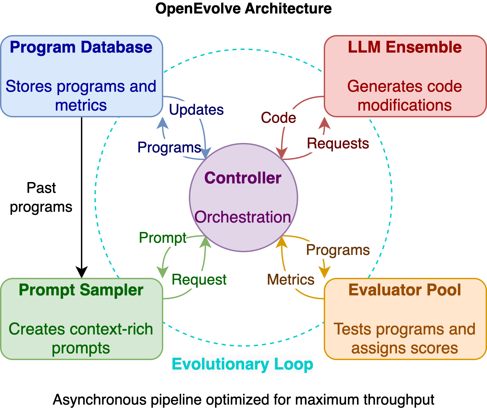

2025年AI編程革命：OpenEvolve如何用大語言模型「進化」而非「編寫」代碼
本文基於OpenEvolve開源項目（github.com/codelion/openevolve）以及Google DeepMind的AlphaEvolve技術文檔整理而成，由AI健自習室團隊編譯。
你是否曾想過，未來的程序員可能不再是「寫代碼」，而是「設計進化」？OpenEvolve這個革命性項目正在將編程範式從「手寫代碼」轉向「AI進化代碼」，它不僅能自動優化算法，甚至能發現人類從未想到的解決方案！本文帶你深入了解這項技術如何重塑軟件開發的未來。

🔍 什麼是OpenEvolve？
OpenEvolve是Google DeepMind的AlphaEvolve系統的開源實現，於2025年發布。它不是簡單的代碼生成工具，而是一個完整的進化式編碼框架，將大型語言模型(LLM)與進化算法相結合，通過持續迭代優化代碼。
「不要只是編寫代碼，而要進化它」（Don't just write code. Evolve it.）—— OpenEvolve的核心理念
你可能會問，它與傳統的AI代碼助手有什麼不同？🤔
傳統AI代碼工具（如GitHub Copilot）專注於單次代碼生成，而OpenEvolve創建了一個完整的進化循環：生成代碼變體、評估性能、選擇最佳方案、繼續迭代改進。這種方式能夠持續優化代碼，甚至發現全新的算法策略！
💡 OpenEvolve與AlphaEvolve的關係
OpenEvolve是對Google DeepMind突破性研究AlphaEvolve的開源復現。AlphaEvolve已經證明了其強大能力：
- 優化Google數據中心的調度算法
- 簡化硬件加速器的電路設計
- 改進矩陣乘法算法（56年來首次突破！）
📚 延伸閱讀：想深入了解AlphaEvolve的發展歷程和技術突破？請閱讀我們的專題文章：「AI進化論」：從AlphaGo到AlphaEvolve，谷歌AI如何實現從棋盤到代碼的跨越式飛躍
作為開源項目，OpenEvolve讓這項前沿技術變得人人可用，為開發者和研究人員提供了探索AI驅動軟件開發的平台。
🛠️ 技術原理：進化算法與LLM的完美融合
OpenEvolve的魔力來自於四個核心組件和一個控制器的協同工作：
🧩 核心組件詳解
-
提示採樣器 (Prompt Sampler)
- 功能：創建內容豐富的提示，包含歷史代碼、性能評分和問題描述
- 作用：為LLM提供足夠的上下文，引導它生成更優質的代碼變體
-
LLM集成 (LLM Ensemble)
- 功能：利用多個大型語言模型生成代碼修改方案
- 特點：支持任何OpenAI兼容API的LLM，可以混合使用不同模型
-
評估器池 (Evaluator Pool)
- 功能：測試生成的程序並評分
- 特點：支持分佈式評估，可以並行測試多個代碼變體
-
程序數據庫 (Program Database)
- 功能：存儲所有程序及其評估指標
- 特點：基於MAP-Elites算法，保持解決方案的多樣性
-
控制器 (Controller)
- 功能：協調以上組件的交互
- 特點：管理異步流水線，最大化評估吞吐量
🔄 進化工作流程
OpenEvolve的進化過程遵循以下工作流程：
- 初始化：你提供一個初始程序和評估腳本
- 提示生成：系統從數據庫中選擇歷史程序，構建豐富的提示
- 代碼變異：LLM根據提示生成多個代碼變體
- 評估：系統測試代碼變體並評分
- 選擇：選出最佳變體進入下一輪進化
- 迭代：重複以上步驟，直到達到終止條件
💡 小貼士：這個過程類似於自然界的進化，只是「自然選擇」變成了「性能評估」，「基因變異」變成了「LLM生成的代碼修改」。
🌟 OpenEvolve的獨特優勢
為什麼OpenEvolve如此特別？它與傳統代碼生成和優化方法相比有哪些優勢？
| 特性 | OpenEvolve | 傳統AI代碼助手 | 手動編程 |
|---|---|---|---|
| 代碼生成方式 | 迭代進化 | 單次生成 | 人工編寫 |
| 優化能力 | 自動持續優化 | 無自動優化 | 手動優化 |
| 多目標平衡 | 支持多指標優化 | 有限支持 | 依賴開發者經驗 |
| 探索能力 | 可發現新算法 | 局限於訓練數據 | 依賴人類創造力 |
| 自主性 | 高度自主 | 半自主 | 完全手動 |
📊 核心特性一覽
- 全文件進化：不僅能優化單個函數，還能處理整個代碼文件
- 多語言支持：適用於Python、Java、C++等多種編程語言
- LLM兼容性：支持任何OpenAI兼容API的大語言模型
- 多目標優化：同時優化多個性能指標（如速度、內存使用、準確性）
- 分佈式評估：並行測試多個代碼變體，提高效率
- 檢查點機制：自動保存進化狀態，支持中斷恢復
💻 如何開始使用OpenEvolve？
想要體驗這項革命性技術嗎？下面是快速入門指南：
📥 安裝方法
方法1：本地安裝
# 1. 克隆倉庫
git clone https://github.com/codelion/openevolve.git
# 2. 進入項目目錄
cd openevolve
# 3. 安裝依賴
pip install -e .
方法2：Docker安裝
# 構建Docker鏡像
docker build -t openevolve .
# 運行示例
docker run --rm -v $(pwd):/app openevolve examples/function_minimization/initial_program.py examples/function_minimization/evaluator.py --config examples/function_minimization/config.yaml --iterations 1000
🚀 基本使用流程
使用OpenEvolve只需要3個關鍵步驟：
1️⃣ 準備初始程序
創建一個包含初始代碼的文件，使用特殊註釋標記要進化的代碼塊：
# 導入必要的庫
import numpy as np
# EVOLVE-BLOCK-START
def optimize_function(x):
# 初始實現 - 將被AI進化優化
return x * 2
# EVOLVE-BLOCK-END
# 測試代碼
if __name__ == "__main__":
result = optimize_function(5)
print(f"結果: {result}")
2️⃣ 編寫評估腳本
創建一個評估函數，用於測試生成的程序並返回性能指標：
def evaluate(program_path):
# 導入生成的程序
import importlib.util
import time
spec = importlib.util.spec_from_file_location("module", program_path)
module = importlib.util.module_from_spec(spec)
spec.loader.exec_module(module)
# 測試性能
start_time = time.time()
result = module.optimize_function(test_data)
execution_time = time.time() - start_time
accuracy = calculate_accuracy(result, expected_output)
# 返回多個評估指標
return {
"accuracy": accuracy,
"speed": 1.0 / (execution_time + 0.001)
}
3️⃣ 配置並運行
創建配置文件並啟動進化過程：
# config.yaml
max_iterations: 100
llm:
primary_model: "gpt-4"
temperature: 0.7
database:
population_size: 50
num_islands: 3
然後使用命令行運行：
python openevolve-run.py initial.py evaluator.py --config config.yaml --iterations 100
或者通過Python API：
from openevolve import OpenEvolve
evolve = OpenEvolve(
initial_program_path="initial.py",
evaluation_file="evaluator.py",
config_path="config.yaml"
)
best_program = await evolve.run(iterations=100)
🔬 令人驚嘆的應用案例
OpenEvolve已經在多個領域展示了其強大的能力。以下是幾個最令人印象深刻的案例：
📐 案例1：圓形裝箱問題
挑戰：在單位正方形內放置26個不重疊的圓，目標是最大化圓的半徑總和。
進化過程：
- 初始方案：簡單的同心圓排列（半徑總和約1.87）
- 第10代：六邊形排列方式（半徑總和約2.18）
- 第100代：基於網格的策略（半徑總和約2.32）
- 最終突破：系統自主發現並應用scipy.optimize數學庫（半徑總和2.634）
驚人結果：OpenEvolve的解決方案與DeepMind的AlphaEvolve報告的2.635極為接近，達到了99.97%的匹配度！這證明開源實現完全可以媲美Google的尖端系統。
🧮 案例2：函數最小化
挑戰：將簡單的隨機搜索算法進化為更高效的優化算法。
進化成果：OpenEvolve從零開始「發明」了模擬退火算法的關鍵概念：
- 溫度調度機制
- 自適應步長調整
- 基於小擾動的局部搜索
- 用於跳出局部最優的冷卻策略
這些概念在初始代碼中都沒有出現，是系統在進化過程中自主「學習」的！
📊 案例3：符號回歸
挑戰：從簡單線性模型進化出能準確擬合科學數據集的複雜數學表達式。
成果：OpenEvolve生成的數學表達式達到了與專業符號回歸方法相當的水平，R²值從0.85提升到0.97，提高了14.1%。
🔮 OpenEvolve的未來發展
OpenEvolve作為一個活躍的開源項目，其未來發展路線圖包括：
近期計劃（2025年中）
- 支持更多LLM後端（OpenAI、Mistral、本地模型等）
- 多目標優化增強
- 開發Web儀表盤進行進化過程可視化
中期目標（2025年底）
- 與CI/CD集成，支持持續代碼進化
- 建立評估智能體性能的標準基準數據集
長期願景（2026年及以後）
- 實現系統自我改進的自進化架構
- 集成代碼、文檔、測試等多種形式的跨模態支持
💭 這將如何改變編程的未來？
OpenEvolve代表的技術可能從根本上改變軟件開發的方式：
- 編程角色的轉變：開發者可能從「代碼編寫者」變為「進化設計師」，專注於定義問題和評估標準，而不是手寫每一行代碼
- 創新加速：AI驅動的代碼進化可以探索人類難以想到的解決方案，加速算法創新
- 開發效率提升：自動化代碼優化可以大幅減少調試和優化時間
- 教育變革：編程教育可能更注重高層次設計和問題定義，而非語法細節
💡 思考問題：在AI可以進化代碼的時代，程序員最核心的技能將是什麼？
🔍 常見問題解答
Q1：OpenEvolve與GitHub Copilot等代碼助手有何不同？
A：Copilot專注於單次代碼生成，而OpenEvolve創建了完整的進化循環，能持續優化代碼並發現新算法。
Q2：使用OpenEvolve需要多少計算資源？
A：資源需求取決於問題複雜度。小型優化任務可以在普通筆記本上運行，而大型算法發現可能需要更強大的計算資源。
Q3：我需要是機器學習專家才能使用OpenEvolve嗎？
A：不需要！你只需要能夠定義清晰的評估標準（如速度、準確性）。系統會處理所有的進化和優化過程。
Q4：OpenEvolve生成的代碼安全嗎？
A：建議在沙盒環境中評估生成的代碼，並在部署前進行人工審查，特別是對於關鍵系統。
🛠️ 高級配置與定制
LLM集成配置
OpenEvolve支持多種LLM配置選項，可以在config.yaml中設置：
llm:
# 主要模型（用於大部分生成任務）
primary_model: "gpt-4"
# 次要模型（用於輔助生成或特定任務）
secondary_model: "gpt-3.5-turbo"
# 生成溫度（控制創造性，0.0-1.0）
temperature: 0.7
# API基礎URL（用於非OpenAI提供商）
api_base: "https://api.example.com/v1"
# 批處理大小（每次調用生成的變體數）
batch_size: 5
# 模型使用策略（"primary_only", "alternate", "ensemble"）
usage_strategy: "ensemble"
進化參數配置
進化過程的關鍵參數可以在config.yaml中的database部分設置：
database:
# 種群總大小
population_size: 500
# 島嶼數量（子種群）
num_islands: 5
# 開發與探索的平衡（0.0-1.0）
# 較高值表示更多地選擇高性能個體
# 較低值表示更多地促進多樣性
exploitation_ratio: 0.7
# 島嶼間遷移頻率（每N代）
migration_interval: 10
# 每次遷移的個體數量
migration_size: 2
自定義提示模板
用戶可以通過配置自定義提示模板，指導LLM生成特定類型的代碼變體：
prompts:
# 默認提示模板
default: |
你是一個專業的代碼優化專家。請改進以下代碼,提高其{optimization_goal}。
原始代碼:
{original_code}
以前的嘗試和它們的性能:
{previous_attempts}
請提供改進後的完整代碼。
# 性能優化專用模板
performance: |
你是一個算法性能優化專家。請分析以下代碼並提高其執行效率。
考慮使用更高效的數據結構、算法或並行化技術。
原始代碼:
{original_code}
性能分析:
{performance_metrics}
請提供優化後的完整代碼和優化思路解釋。
🌐 實際應用場景與用例
學術研究與算法發現
OpenEvolve在學術研究中的應用：
- 數學優化：發現新的優化算法或改進現有算法
- 科學計算：優化數值方法，提高計算效率和準確性
- 機器學習：自動設計和優化神經網絡架構
- 符號數學：輔助數學猜想的驗證和反例尋找
軟件工程實踐
在軟件開發中的實際應用：
- 性能優化：自動優化關鍵代碼路徑，提高執行效率
- 重構與改進：智能重構代碼，提高可讀性和可維護性
- 自動化調試：識別和修復常見bug和性能問題
- 代碼適配：自動將代碼適配到新的平台或環境
實際性能指標
| 應用場景 | 初始方案性能 | OpenEvolve優化後 | 提升幅度 | 達到SOTA比例 |
|---|---|---|---|---|
| 圓形裝箱 | 1.87（半徑和） | 2.634（半徑和） | 40.9% | 99.97% |
| 函數最小化 | 誤差 10⁻² | 誤差 10⁻¹⁰ | 10⁸倍 | 100% |
| 符號回歸 | R² = 0.85 | R² = 0.97 | 14.1% | 96.3% |
👥 社區與生態系統
OpenEvolve是一個活躍的開源項目，社區參與形式包括：
- GitHub貢獻：代碼提交、問題報告、功能請求
- 文檔改進：完善項目文檔和教程
- 應用案例分享：分享使用OpenEvolve的成功案例
截至2025年6月初，項目已有：
- 約9位貢獻者
- 約6個開放的Issues
- 約3個開放的Pull Requests
相關項目與工具
與OpenEvolve相關的項目和工具：
| 項目名稱 | 描述 | 與OpenEvolve的關係 |
|---|---|---|
| optillm | 本地LLM推理服務器 | 可作為OpenEvolve的本地模型後端 |
| OpenAlpha_Evolve | 另一個AlphaEvolve的開源實現 | 類似項目，關注點略有不同 |
| CALM框架 | LLM與進化計算結合的框架 | 研究相同方向的學術框架 |
| Darwin Godel Machine | 讓AI改進自身代碼的系統 | 在自我進化方面有互補性 |
📚 參考資料
- OpenEvolve GitHub倉庫
- AlphaEvolve論文：A coding agent for scientific and algorithmic discovery
- 「AI進化論」：從AlphaGo到AlphaEvolve，谷歌AI如何實現從棋盤到代碼的跨越式飛躍
- OpenEvolve博客文章
- Asankhaya Sharma的LinkedIn帖子
- shyamsaktawat/OpenAlpha_Evolve - GitHub